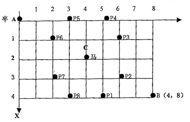
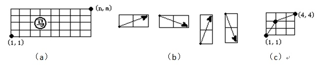
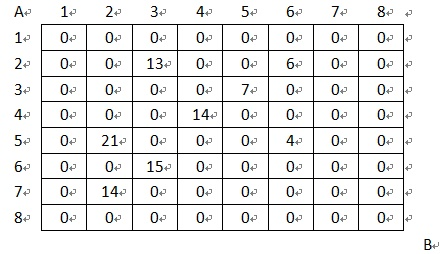

题目描述
如图1，在棋盘的A点有一个过河卒，需要走到目标B点。卒行走规则：可以向下、或者向右。同时在棋盘上的任一点有一个对方的马（如图1的C点），该马所在的点和所有跳跃一步可达的点称为对方马的控制点。例如，图1中C点上的马可以控制9个点（图中的P1，P2，…，P8 和C）。卒不能通过对方马的控制点。
棋盘用坐标表示，A点（0，0）、B点（n,m）（n，m为不超过50的整数，并由键盘输入），同样马的位置坐标通过键盘输入，并约定C<>A，同时C<>B。
编写程序，计算出卒从A点能够到达B点的路径的条数。

图1 棋盘上的过河卒和对方的控制马
输入格式
一行四个数据，分别表示B点坐标和马的坐标。
输出格式
一个数据，表示所有的路径条数。
输入样例
6 6 3 3
输出样例
6
在棋盘的A点（0，0）的过河卒要到达棋盘上的任意一点，只能从左边和上边两个方向过来。因此，要到达某一点的路径数，等于和它相邻的左、上两个点的路径数和：
F[i][j] = F[i-1][j] + F[i][j-1]。
可以使用逐列（或逐行）递推的方法来求出从起始顶点到终点的路径数目，即使有障碍（将马的控制点称为障碍），这一递推方法也完全适用，只要将到达该点的路径数目设置为0即可，用F[i][j]表示到达点（i，j）的路径数目，g[i][j]表示点（i，j）有无障碍，递推方程如下：
F[0][0] = 1 初始点直接可达。
F[i][0] = F[i-1][0] （i > 0，g[i][0] =0） // 左边界
F[0][j] = F[0][j-1] （j > 0，g[0][j] = 0） // 上边界
F[i][j] = F[i-1][j] + F[i][j-1] （i > 0，j > 0，g[x, y] = 0） // 递推式
#include <stdio.h>
int main()
{
int i,j,x,y,n,m,forbidden[51][51];
long int ans[51][51];
int dx[8]={-2,-1,1,2,2,1,-1,-2};
int dy[8]={1,2,2,1,-1,-2,-2,-1};
scanf("%d%d%d%d",&n,&m,&x,&y);
for (i=0;i<=n;i++)
for (j=0;j<=m;j++)
{
forbidden[i][j]=0;
ans[i][j]=0;
}
ans[0][0]=1;
forbidden[x][y]=1;
for (i=0;i<8; i++)
if (x+dx[i]>=0 && x+dx[i]<=n && y+dy[i]>=0 && y+dy[i]<=m)
forbidden[x+dx[i]][y+dy[i]]=1;
for (i=1; i<=n; i++)
if (forbidden[i][0]==0)
ans[i][0]=1;
else break;
for (i=1; i<=m; i++)
if (forbidden[0][i]==0)
ans[0][i]=1;
else break;
for (i=1; i<=n; i++)
for (j=1; j<=m; j++)
if (forbidden[i][j]==0)
ans[i][j]=ans[i-1][j]+ans[i][j-1];
printf("%ld\n",ans[n][m]);
return 0;
}
问题描述
设有一个n*m的棋盘（2<=n<=50，2<=m<=50），在棋盘上任一点有一个中国象棋马，如图2（a）所示。马行走的规则为：（1）马走日字；（2）马只能向右走，即如图2（b）所示的4种走法。
编写一个程序，输入n和m，找出一条马从棋盘左下角（1，1）到右上角（n，m）的路径。例如：输入n=4、m=4时，输出路径 (1,1)->(2,3)->(4,4)。这一路经如图2（c）所示。若不存在路径，则输出"No！"

图2 棋盘及马儿的行走
输入格式
一行两个数据，表示终点的位置坐标。
输出格式
一条可行的行走路径。如果可行的行走路径有多条，任意输出一条即可。若不存在路径，则输出"No！"。
输入样例
10 10
输出样例
(1,1)->(2,3)->(3,5)->(4,7)->(5,9)->(6,7)->(7,9)->(9,8)->(10,10)
（1）编程思路
先将棋盘的横坐标规定为i，纵坐标规定为j，对于一个n×m的棋盘，i的值从1到n，j的值从1到m。棋盘上的任意点都可以用坐标（i，j）表示。
对于马的移动方法，用变量k来表示四种移动方向（1、2、3、4）；而每种移动方法用偏移值来表示，并将这些偏移值分别保存在数组dx和dy中，如表1所示。
表1 4种移动方法对应偏移值
|
K |
Dx[k] |
Dy[k] |
|
1 |
2 |
1 |
|
2 |
2 |
-1 |
|
3 |
1 |
2 |
|
4 |
1 |
-2 |
根据马走的规则，马可以由（i-dx[k]，j-dy[k]）走到（i，j）。只要马能从（1，1）走到（i-dx[k]，j-dy[k]），就一定能走到（i，j），当然，马走的坐标必须保证在棋盘上。
以（n，m）为起点向左递推，当递推到（i-dx[k]，j-dy[k]）的位置是（1，1）时，就找到了一条从（1，1）到（n，m）的路径。
程序中可用一个二维数组a表示棋盘，使用倒推法，从终点（n，m）往左递推，设初始值a[n][m]为（-1，-1）（表示终点），如果从（i，j）一步能走到（n，m），就将（n，m）存放在a[i][j]中。如表2所示，a[3][2]和a[2][3]的值是（4，4），表示从这两个点都可以到达坐标（4，4）。从（1，1）可到达（2，3）、（3，2）两个点，所以a[1][1]存放两个点中的任意一个即可。递推结束以后，如果a[1][1]值为（0，0）说明不存在路径，否则a[1][1]值就是马走下一步的坐标，以此顺推输出路径。
表2 N=4，M=4时，数组a的赋值情况
|
|
|
|
A[4][4]={-1,-1} |
|
|
A[2][3]={4,4} |
|
|
|
|
|
A[3][2]={4,4} |
|
|
A[1][1]={2,3} |
|
|
|
（2）源程序。
#include <stdio.h>
int main()
{
int dx[5]={0,2,2,1,1},dy[5]={0,1,-1,2,-2};
struct point
{
int x;
int y;
};
struct point a[51][51];
int i,j,n,m,k;
for(i=0;i<51;i++)
for (j=0;j<51;j++)
a[i][j].x=a[i][j].y=0;
scanf("%d%d",&n,&m);
a[n][m].x=-1; // 标记为终点
a[n][m].y=-1;
for (i=n;i>=2;i--) // 倒推
for (j=1;j<=m;j++)
if (a[i][j].x!=0)
for (k=1;k<=4;k++)
{
a[i-dx[k]][j-dy[k]].x=i;
a[i-dx[k]][j-dy[k]].y=j;
}
if (a[1][1].x==0)
printf("No!\n");
else // 存在路径
{
i=1; j=1;
printf("(%d,%d)",i,j);
while (a[i][j].x!=-1)
{
k=i;
i=a[i][j].x; j=a[k][j].y;
printf("->(%d,%d)",i,j);
}
printf("\n");
}
return 0;
}
题目描述
设有N×N的方格图(N≤9)，我们将其中的某些方格中填入正整数，而其他的方格中则放入数字0。如下所示（见样例）:

某人从图的左上角的A点出发，可以向下行走，也可以向右走，直到到达右下角的B点。在走过的路上，他可以取走方格中的数（取走后的方格中将变为数字0）。
此人从A点走到B点，试找出1条这样的路径，使得取得的数之和为最大。
输入格式
输入的第一行为一个整数N（表示N×N的方格图），接下来的每行有三个整数，前两个表示位置，第三个数为该位置上所放的数。一行单独的0表示输入结束。
输出格式
只需输出一个整数，表示找出的1条路径上取得的最大的和。
输入样例
8
2 3 13
2 6 6
3 5 7
4 4 14
5 2 21
5 6 4
6 3 15
7 2 14
0 0 0
输出样例
36
（1）编程思路。
因为行走的方向是：可以向下行走，也可以向右走。因此，位置（i,j）可以由上边的格子（i-1,j）走到，也可以由左边的格子（i,j-1）走到。
设f[i][j]表示走到格子（i,j）处所取方格数的最大值，a[x][y]表示格子(x,y)上的数字。显然有
f[i][j]=max（f[i-1][j],f[i][j-1]）+a[i][j];
初始时 f[1][1]=a[1][1]。
（2）源程序。
#include <stdio.h>
int max(int a,int b)
{return a<b?b:a;}
int main()
{
int f[10][10]={0}, a[10][10]={0};
int n;
scanf("%d",&n);
while(1)
{
int x, y, w;
scanf("%d%d%d",&x,&y,&w);
if (x==0 && y==0 && w==0) break;
a[x][y]=w;
}
f[1][1]=a[1][1];
int i, j;
for (i=1;i<=n;i++)
{
for (j=1;j<=n;j++)
{
f[i][j]=max(f[i-1][j],f[i][j-1])+a[i][j];
}
}
printf("%d\n",f[n][n]);
return 0;
}
题目描述
设有N×N的方格图(N≤9)，我们将其中的某些方格中填入正整数，而其他的方格中则放入数字0。如下所示（见样例）:
某人从图的左上角的A点出发，可以向下行走，也可以向右走，直到到达右下角的B点。在走过的路上，他可以取走方格中的数（取走后的方格中将变为数字0）。
此人从A点到B点共走两次，试找出2条这样的路径，使得取得的数之和为最大。
输入格式
输入的第一行为一个整数N（表示N×N的方格图），接下来的每行有三个整数，前两个表示位置，第三个数为该位置上所放的数。一行单独的0表示输入结束。
输出格式
只需输出一个整数，表示2条路径上取得的最大的和。
输入样例
8
2 3 13
2 6 6
3 5 7
4 4 14
5 2 21
5 6 4
6 3 15
7 2 14
0 0 0
输出样例
67
（1）编程思路1。
本题要求找到2条从（1，1）到（n,n）的路径，被取走的格子里的数变为0，使得在两条路径上格子中数之和最大时，就成为了“二取方格数”问题。
最容易想到的就是先后做两次单条路径“方格取数”，这一算法的本质是贪心，但这是错误的，反例如下：
|
3 |
4 |
5 |
|
0 |
0 |
0 |
|
2 |
8 |
2 |
贪心：第一路径：3->4->8->2 (17) 第二路径：5 （5） 总和为22
事实上我们可以将所有的数都取完，总和为24。
解决“二取方格数”问题需要用到“多进程DP”。即解决本题时，由于此人从A点到B点共走两次，要找出2条这样的路径，因此可以考虑为两个人同时从A走到B。
设f[i][j][k][l]为第一个人走到(i,j)，第二个人走到(k,l)时方格取数能达到的最大值，a[x][y]表示格子(x,y)上的数字。
状态转移情况如下：
1）两个人同时向右走
f[i][j][k][l]=max(f[i][j][k][l],f[i-1][j][k-1][l]+a[i][j]+a[k][l]);
2）两个人同时向下走
f[i][j][k][l]=max(f[i][j][k][l],f[i][j-1][k][l-1]+a[i][j]+a[k][l]);
3）两个人分别向右和向下走
f[i][j][k][l]=max(f[i][j][k][l],f[i-1][j][k][l-1]+a[i][j]+a[k][l]);
4）两个人分别向下和向右走
f[i][j][k][l]=max(f[i][j][k][l],f[i][j-1][k-1][l]+a[i][j]+a[k][l]);
当然，若两人走到了同一个格子，即(i,j)和(k,l)是同一个点，f[i][j][k][l]值还要减去a[i][j]。
两个人都走到（n,n）格子时，得到答案，即f[n][n][n][n]为所求。
（2）源程序1。
#include <stdio.h>
int max(int a,int b)
{return a<b?b:a;}
int main()
{
int f[10][10][10][10]={0}, a[10][10]={0};
int n;
scanf("%d",&n);
while(1)
{
int x, y, w;
scanf("%d%d%d",&x,&y,&w);
if (x==0 && y==0 && w==0) break;
a[x][y]=w;
}
f[1][1][1][1]=a[1][1];
int i, j, k, l;
for (i=1;i<=n;i++)
{
for (j=1;j<=n;j++)
for (k=1;k<=n;k++)
for (l=1;l<=n;l++)
{
f[i][j][k][l]=max(f[i][j][k][l],f[i-1][j][k-1][l]+a[i][j]+a[k][l]);
f[i][j][k][l]=max(f[i][j][k][l],f[i][j-1][k][l-1]+a[i][j]+a[k][l]);
f[i][j][k][l]=max(f[i][j][k][l],f[i-1][j][k][l-1]+a[i][j]+a[k][l]);
f[i][j][k][l]=max(f[i][j][k][l],f[i][j-1][k-1][l]+a[i][j]+a[k][l]);
if(i==k && j==l)f[i][j][k][l]-=a[i][j];
}
}
printf("%d\n",f[n][n][n][n]);
return 0;
}
（3）编程思路2。
按思路1的方法，由于状态总共有n^4种，所以时间复杂度为O(n^4)。
如果让两个人同时从(1,1)处出发，并同时向前延伸，那么当两个人都走了k步，两条路径都已经各自包含k个方格时，两条路径的末端必同在整个矩阵的第k条对角线上。如下图3所示。
图3 行走对角线示意图
由图3可知，走1步可到达（1,1）格子（标注为2），走两步可到达（1,2）或（2,1）格子（标注为2），走三步可到达（1,3）、（2,2）或（3,1）格子（标注为4），……。
由图可知，对于每一条路径，向右延伸的格子数+向下延伸的格子数=k（定值），也就是末端两个格子的纵横坐标之和=k。
所以我们只需要知道两路径末端所在的行编号x1,x2以及两末端所在对角线编号k，就可以确定末端节点的位置（x1,k-x1），(x2,k-x2)。这样，可以只枚举对角线、x1和x2。
设状态f[l][x1][x2]第一个人横坐标为x1（即第一个路径末端在第x1行），第二个人横坐标为x2（即第二路径末端在第x2行），且两末端同在第k条对角线上时的最优解。
到达状态f[l][x1][x2]有有4种可能：
1）第1人从x1的左边向右到达x1，第2人从x2的左边向右到达x2，其前一状态应为f[k-1][x1-1][x2-1]；
2）第1人从x1的上边向下到达x1，第2人从x2的上边向下到达x2，其前一状态应为f[k-1][x1][x2]；
3）第1人从x1的左边向右到达x1，第2人从x2的上边向下到达x2，其前一状态应为f[k-1][x1-1][x2]；
4）第1人从x1的上边向下到达x1，第2人从x2的左边向右到达x2，其前一状态应为f[k-1][x1][x2-1]；
这样，可以得到状态转移方程：
tmp=max(max(f[k-1][x1-1][x2-1],f[k-1][x1][x2]),max(f[k-1][x1-1][x2],f[k-1][x1][x2-1]));
f[k][x1][x2]=max(f[k][x1][x2],tmp+a[x1][k-x1]+a[x2][k-x2]);
同样，如果点（x1，k-x1）和（x2，k-x2）重合了，需要减去一个点中的数（每个点只能取一次）。
（4）源程序2。
#include <stdio.h>
int max(int a,int b)
{return a<b?b:a;}
int main()
{
int f[19][10][10]={0}, a[10][10]={0};
int n;
scanf("%d",&n);
while(1)
{
int x, y, w;
scanf("%d%d%d",&x,&y,&w);
if (x==0 && y==0 && w==0) break;
a[x][y]=w;
}
int d=n*2;
f[2][1][1]=a[1][1];
for (int i=3;i<=d;i++)
{
int c=i<n+1?i:n+1;
int s=i>n?i-n:1;
for(int j=s;j<c;j++)
for(int k=s;k<c;k++)
{
int x1=j,x2=k,y1=i-j,y2=i-k;
int tmp=max(max(f[i-1][x1-1][x2-1],f[i-1][x1][x2]),
max(f[i-1][x1-1][x2],f[i-1][x1][x2-1]));
f[i][x1][x2]=max(f[i][x1][x2],tmp+a[x1][y1]+a[x2][y2]);
if (x1==x2&&y1==y2) f[i][x1][x2]=f[i][x1][x2]-a[x1][y1];
}
}
printf("%d\n",f[d][n][n]);
return 0;
}